2A
Portrait
The illustrated profile, recoloured from green and yellow into terracotta, ochre and plum. Richest at large sizes — a banner and profile-picture mark.
Mindful Moments
with Amake Fe
Mindful Moments
with Amake Fe
48 / 32 / 20 px
2B
Line Profile
The same profile drawn in a single plum line on cream. Prints in one colour, works as a watermark, and stays elegant on covers.
Mindful Moments
with Amake Fe

Mindful Moments
with Amake Fe